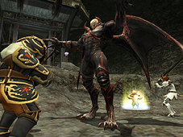
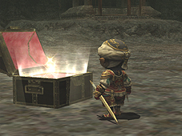
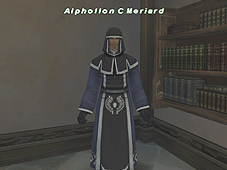
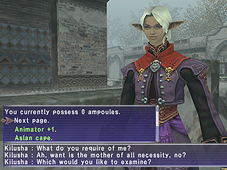
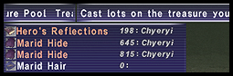

Einherjar is an ever-changing multiplayer battlefield based in the Hazhalm Testing Grounds.
What are the Hazhalm Testing Grounds?
The training grounds are divided into three separate wings, with each wing consisting of three large chambers. Each chamber houses a horde of enemies and a boss-type character known as a Guardian of Asgarth. All the monsters in a chamber must be defeated within a certain time limit to clear the area. Once the three chambers in wing I have been cleared, the path to wing II will open. Only after all three wings have been cleared will players be given the opportunity to enter Valgrind and learn the secret the forbidden chamber holds.
| Wing I | ||
| Rossweisse's Chamber | Grimgerde's Chamber | Siegrune's Chamber |
| Wing II | ||
| Helmwige's Chamber | Schwertleite's Chamber | Waltraute's Chamber |
| Wing III | ||
| Ortlinde's Chamber | Gerhilde's Chamber | Brunhilde's Chamber |
| Valgrind | ||
| ???'s Chamber | ||

What can I win?
After defeating all the enemies within a chamber, an armoury crate will appear in the middle of the room. Opening this crate will grant an additional 5 minutes to the reservation time and yield various rewards, including Key Items and abjurations.
1. Key Items
Upon clearing a chamber, all players will receive a key item that signifies they assited in the clearing of the area. There is one for each room, and all nine will be required for entry into the final chamber, Valgrind.
*The key items will vanish at the moment of entry into Valgrind.
*Players who clear the 10th chamber will be awarded a pass that allows them entry to any of the other nine chambers without having to clear each wing in succession.

2. Abjurations
Several types of new and old abjurations can be obtained from the crates. All cursed items and abjurations should be taken to Alphollon C Meriard for "spiritual cleansing."

Therion Ichor
Upon exiting an Einherjar chamber, players will receive ampoules of therion ichor based on the number and type of enemies defeated within. These can be used to purchase various valuable items from Kilusha in Nashmau.
※The number of ampoules attainable remains the same whether the chamber is successfully cleared or not.
Only the following can participate in Einherjar:
1. Players who have installed the Aht Urghan Expansion disc and registered its contents.
2. Players who are level 60 or higher.
3. Parties/Alliances with 6-36 members.
*Players need not have completed any Aht Urghan missions or mercenary promotion quests to participate.
Players are required to take the following steps to enter the Hazhalm Testing Grounds:
1. Obtain a smouldering lamp
Smouldering lamps can be purchased from Kilusha in Nashmau for the low, low price of 180,000 gil. Divided by 36, that is a mere 5,000 gil a piece.
2. Make a reservation
Trading a smouldering lamp to the Entry Gate in the Hazhalm Testing Grounds will transform it into a glowing lamp. At this moment, the player who made the trade will be allowed to select a chamber and reserve it.
- Reservations
*Reservations last 30 minutes from the moment they are made
*If less than six people occupy the area 10 minutes after the reservation is made, the reservation will be automatically cancelled, regardless of the time remaining on the lamp. At this point, the glowing lamp will become void and players will not be allowed re-entry with it.
*A reservation's time limit can be viewed in the glowing lamp's help window.
*If another party already occupies the selected chamber, the smouldering lamp will not light, and players can either select another chamber or wait for the one they chose to open.
3. Making copies of the glowing lamp
By using the glowing lamp, players can create replicas. These replicas can be traded to other players, allowing them entry into the chamber indicated on the lamp. Up to 36 players can enter the same chamber at once.
*While, in theory, an infinite number of glowing lamps can be produced, entry into the reserved chamber is limited to the first 36 players to trade their lamp to the gate. Once 36 people have entered the chamber, all remaining lamps will become void.
*Glowing lamps can be sold on bazaars as well as traded.
4. Enter the chamber
To enter the reserved chamber, players need only trade their glowing lamp to the Entry Gate and select "yes" from the query window.
Unlike Dynamis, if players leave the area via magic or by returning to their Home Points, they will not be allowed re-entry into the chamber, regardless of time remaining on the reservation. After entering a chamber, players will be required to wait at least 3 Earth days before they can enter the training grounds again.
*Players can check the amount of time remaining before they may re-enter Hazhalm by checking the Entry Gate or by speaking with Kilusha in Nashmau.
*If all players in a chamber remain KO'd for more than 3 minutes, everyone will be teleported out of the area.
*The three-day wait applies to all chambers in the training grounds.

As with Dynamis, players do not need to be in the same party and/or alliance to participate in any of the battles fought within the chambers. In addition, all players will be allowed to lot on any items found. The name of the player with the current highest lot number will be displayed next to the item in the treasure window.
*Make sure everyone lots on items before chamber reservations run out to prevent items from being lost or going to an unintended player.
*Players who have left the chamber will not be allowed to lot on items.
*Upon clearing a chamber, an amoury crate will appear in the center of the area. The moment the crate is opened, players in the chamber will have five minutes to lot on all items, regardless of the amount of time remaining on the chamber reservation.
Chat & battle effect filters
Because large numbers of monsters and players will be occupying the same small rooms, we highly recommend that everyone adjust their chat and battle effect filters accordingly. Turning on these filters not only makes message windows easier to see, but it also reduces the amount of data that needs to be sent from the server to your computer or console. This usually results in a smoother playing experience.
Windows settings
In addition to chat and battle effect filters, the Windows version of FINAL FANTASY XI also comes with a variety of other adjustable settings that may help improve performance. Please make any necessary adjustments before entering Hazhalm.